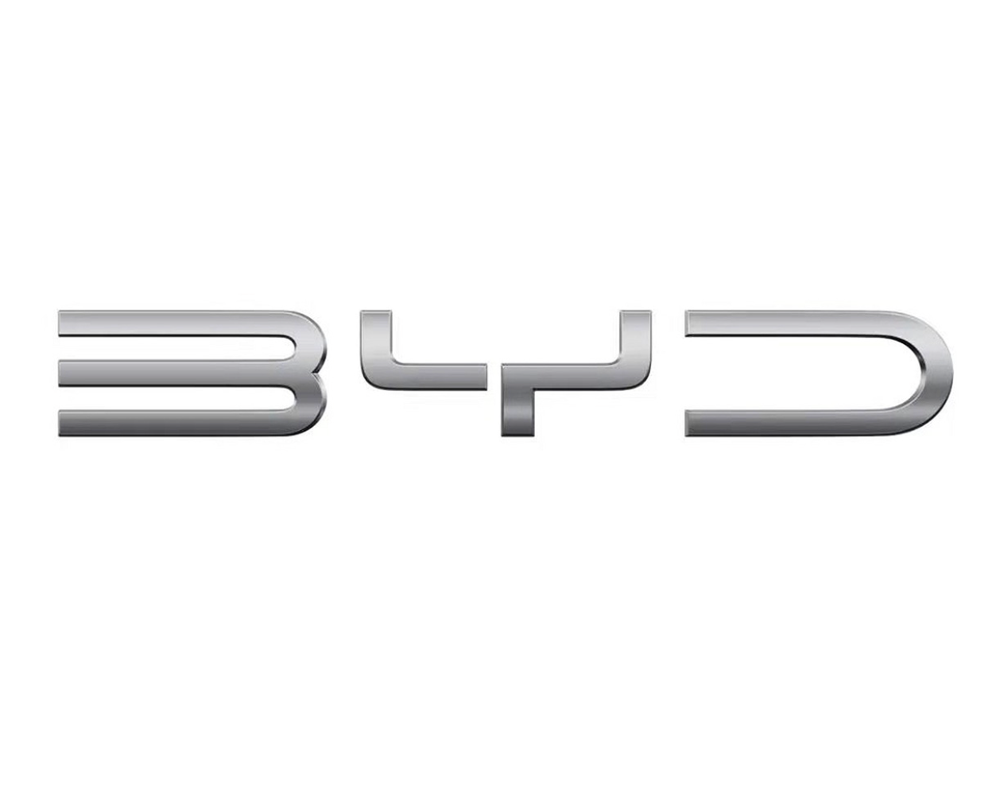

Education
-
2017 - 2020University of Chinese Academy of Sciences (UCAS) M.S. in Computer TechnologyAdvisors: Prof. Cheng-Zhong Xu and Prof. Kejiang Ye.
Awards: National Scholarship, Best Paper Award. -
2013 - 2017Shenzhen University (SZU) B.E. in Electronic EngineeringAwards: Outstanding Graduate of Shenzhen University.
Recommended for admission to UCAS.
Work Experience
-
2025-
PresentInsta360, Research Center ResearcherLeading data synthesis and model simulation projects, focusing on the application of cutting-edge technologies in company products. -
 Mar. 2024
-
Mar. 2025BYD, Intelligent Driving Center Senior Algorithm EngineerParticipated in the development of parking technologies for high-end vehicle models, including Yangwang U8 and Denza D9. -
 Oct. 2022
Oct. 2022
-
Mar. 2024Meituan, Drone Business Unit Algorithm Strategy EngineerContributed to the development of Meituan's drone simulation systems. -
Jul. 2020
-
Oct. 2022Alibaba, DAMO Academy Algorithm EngineerResponsible for projects involving face recognition, object tracking, and object detection.
Selected Publications
Published in [Conference Name]
ICPR (International Conference on Pattern Recognition), 2020
[BigData] (Highly Cited), 2019